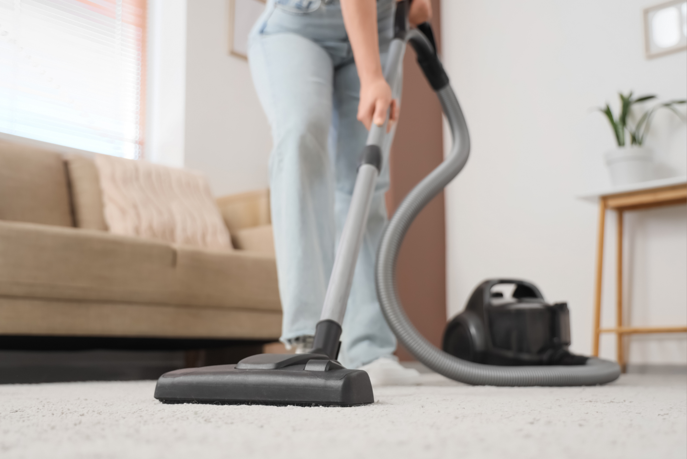

If you have dust allergies, you probably already know that cleaning your home can feel like a never-ending chore.
You vacuum the floors, wipe down the counters, and change your sheets — only to wake up the next morning sneezing again. The problem isn't necessarily that your home is dirty. Dust and the allergens that come with it can collect in places that are easy to overlook, including mattresses, upholstered furniture, curtains, and even the tops of cabinets.
Dust itself isn't usually the main allergy trigger. Instead, household dust can contain a mixture of particles, including dust mite allergens, pet dander, pollen, and other debris. For people who are sensitive to dust mites, keeping these particles under control can make a noticeable difference.
So, where should you actually be cleaning?
Start With the Bedroom
If you have dust allergies, the bedroom should be one of your biggest priorities.
You spend several hours there every night, and mattresses, pillows, blankets, and upholstered furniture can all collect dust and dust mite allergens over time.
Start with your bedding. Wash sheets, pillowcases, and blankets regularly, and pay attention to the care instructions on each item. Don't forget about pillows and mattress covers, which can also accumulate allergens.
Your mattress deserves attention, too. Vacuuming the surface and using allergen-resistant mattress and pillow covers can help reduce your exposure while you sleep.
And don't forget the area underneath your bed. It's one of those places that's easy to ignore because you can't see the dust from above, but dust can accumulate quickly in low-traffic areas.
Where to clean:
- Mattress and pillows
- Bedding and blankets
- Under the bed
- Bed frame and headboard
- Nightstands
- Curtains and blinds
- Bedroom rugs and floors
Don't Forget Upholstered Furniture
Your couch might look clean while still holding plenty of dust.
Fabric-covered furniture can trap dust, dander, and other particles between its fibers. Every time you sit down, move a cushion, or vacuum nearby, some of those particles can become airborne again.
Vacuum upholstered furniture regularly, paying particular attention to cushions, seams, and underneath removable cushions.
If your furniture has washable covers, clean them according to the manufacturer's instructions. For furniture that can't be washed, a vacuum with a HEPA filter can help capture smaller particles rather than simply redistributing them into the room.
Where to clean:
- Couch cushions
- Underneath cushions
- Armchairs
- Fabric ottomans
- Upholstered headboards
- Fabric pet beds
Look Up: Curtains, Blinds, and Ceiling Fans
When we're cleaning, it's easy to focus on what's directly in front of us. But some of the dustiest surfaces in a home are above eye level.
Curtains can collect dust over time, especially if they aren't regularly washed. Blinds can also accumulate a layer of dust on their slats.
Then there are ceiling fans.
A fan that hasn't been cleaned in a while can collect a surprising amount of dust on its blades. When the fan turns on, that dust can be redistributed throughout the room.
Give these overlooked surfaces regular attention. Dust blinds with a microfiber cloth or appropriate duster, wash curtains when their care instructions allow, and wipe down ceiling fan blades carefully.
Where to clean:
- Ceiling fan blades
- Curtain panels
- Curtain rods
- Window blinds
- Window sills
- Air vents
Pay Attention to Carpets and Rugs
Carpets and rugs can act like giant dust collectors.
They trap particles that come into the home on shoes, clothing, and pets, and they can hold onto those particles until they're disturbed.
Regular vacuuming is one of the simplest ways to keep dust under control. Move slowly rather than rushing over the floor, and don't forget edges and areas underneath furniture.
For people with allergies, a vacuum with a HEPA filter can be particularly useful because it is designed to capture very small particles.
Rugs deserve the same attention. If you have smaller washable rugs, washing them according to their care instructions can help remove accumulated dust and allergens.
Where to clean:
- Wall-to-wall carpeting
- Area rugs
- Carpet edges
- Under furniture
- Stair carpeting
- Entryway rugs
Clean the Places You Rarely Think About
Some of the biggest dust traps in your home aren't the surfaces you clean every day.
Think about the tops of bookshelves, cabinets, picture frames, lampshades, electronics, and decorative objects. These surfaces can sit undisturbed for weeks or months while dust gradually builds up.
You don't need to deep-clean your entire home every day. Instead, add these overlooked areas to your regular cleaning rotation.
A microfiber cloth can help pick up dust rather than simply pushing it around. For particularly dusty areas, vacuuming first can also help prevent large amounts of dust from becoming airborne.
Where to clean:
- Tops of cabinets
- Bookshelves
- Picture frames
- Lampshades
- Electronics
- Decorative objects
- Baseboards
- Behind furniture
Give Your Air a Little Attention
Cleaning your surfaces is only part of the equation.
Dust and other airborne particles can circulate through your home, especially when you're vacuuming, moving furniture, or running fans and HVAC systems.
Regularly replacing HVAC filters according to the manufacturer's recommendations can help your home's filtration system work properly. A portable HEPA air purifier may also be useful in rooms where you spend a lot of time, particularly the bedroom.
Ventilation matters, too. When outdoor pollen levels are high, however, opening windows isn't always helpful for people with multiple allergies. Consider your specific triggers and local conditions.
Your Cleaning Method Matters, Too
If you have dust allergies, cleaning can sometimes temporarily make you feel worse.
That's because cleaning can disturb settled dust and send particles back into the air.
Try using a damp microfiber cloth instead of dry dusting whenever possible. For floors and carpets, use a vacuum designed to contain fine particles rather than simply blowing them back into the room.
It can also help to clean from top to bottom. Dust higher surfaces first, then move down to furniture and floors. That way, anything that falls during cleaning can be picked up at the end.
And if cleaning consistently triggers your symptoms, consider wearing a mask while cleaning or asking someone else to handle the dustier jobs.
The Bottom Line
If you have dust allergies, you don't need to keep your entire house spotless 24/7.
Instead, focus your efforts on the places where dust and allergens tend to accumulate: your bedroom, upholstered furniture, carpets and rugs, curtains, ceiling fans, and overlooked surfaces.
A consistent cleaning routine can help reduce the amount of allergen in your environment, but you don't have to tackle everything at once. Start with the rooms where you spend the most time, especially your bedroom, and work your way from there.
Because when it comes to allergies, cleaning smarter can be more useful than simply cleaning more.